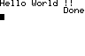

BZC is a command-line program, meaning it requires one or more parameters to be passed to it at run time (normally from a command line window).
When installed under Windows, BZC setup automatically associates .bzc files with bzc.exe, allowing compilation of a source file simply by right-clicking on it and chosing "compile".
Normaly typing BZC <filename> is enough, however there some extra options
| BZC Command Line Syntax: | ||
bzc [option] <filename> |
||
| options: | ||
| -c | Stops after creating an ASM source file (.asm) | |
| -a | Stops after creating an object file (.bin) | |
| --tasm |
Compile a BZC source file to an ASM source file compatible with TASM. Note that once a file is compiled to this format, it is NOT compilable with BZC buildin assebler | |
| -v | Be verbose | |
The compiler automaticaly detects what kind of source file it is dealing with. .bzc stands for BASIC ASM source, .asm is native assembly (the compiler will only assemble and squish the source) and .bin stands for native binary data. In this last case the compiler only generates an .8xp file which allows transfer to your calculator. If your source file extension is other than one of these, the compiler generates an error.
Is this all a bit too complicated? In that case just mind that .bzc is the extension you have to use for your BASIC ASM source files.
Got that? Good! Now, let's compile a test program. The following program serves very nicely as a test of BZC and a demonstration of BASIC ASM's power. To do this, open a text editor, copy the following program into a new file, and call it hellowld.bzc. Then, open a command window, switch to the directory containing your file and type: bzc hellowld.bzc (or, under Windows, just double-click the file if it has the .bzc extension).
| Sample Program: |
| #include <asmlib.h>
STRING mes = "Hello World !!" START |
At the moment, don't worry about what all the code means, just concentrate on getting it to compile correctly. If you are successful, you ought to see something quite similar to this on your calculator or emulator:

If your calculator says hello, congratulations: you've just made your first program with BZC; move on to Program Layout. Otherwise, recheck your code and verify that BZC was installed correctly.